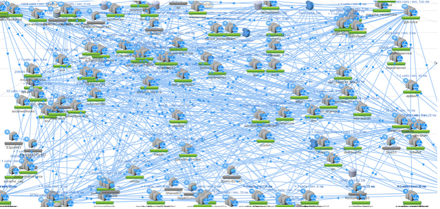
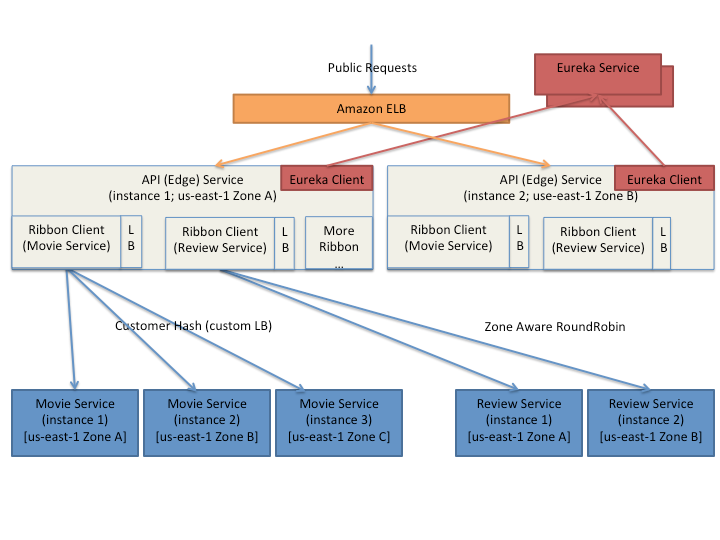

Thomas Reiser / 01.09.2017


Java Config:
public class RibbonConfiguration {
@Autowired
IClientConfig ribbonClientConfig;
// Ping URLs to determine the server's availability
@Bean public IPing ribbonPing(IClientConfig config) {
return new PingUrl();
}
// Determine endpoint based on ping response time
@Bean public IRule ribbonRule(IClientConfig config) {
return new WeightedResponseTimeRule();
}
}
YAML Config:
spring:
application:
name: s4t-ribbon-demo
server:
port: 8080
s4t-test-service:
ribbon:
listOfServers:
remote-host1:9092
remove-host2:9999
ServerListRefreshInterval: 15000
Anwendung:
@RestController
@RibbonClient(name = "demo", configuration = RibbonConfiguration.class)
public class ServerLocationApp {
@Autowired RestTemplate restTemplate;
@LoadBalanced @Bean RestTemplate getRestTemplate() {
return new RestTemplate();
}
@RequestMapping("/server-location")
public String serverLocation() {
return this.restTemplate.getForObject(
"http://s4t-test-service/my-endpoint", String.class);
}
}
Snippet
interface GitHub {
@RequestLine("GET /repos/{owner}/{repo}/contributors")
List<Contributor> contributors(@Param("owner") String owner, @Param("repo") String repo);
}
static class Contributor {
String login;
int contributions;
}
public static void main(String... args) {
GitHub github = Feign.builder().decoder(new GsonDecoder())
.target(GitHub.class, "https://api.github.com");
// Fetch and print a list of the contributors to this library.
List<Contributor> contributors = github.contributors("OpenFeign", "feign");
for (Contributor contributor : contributors) {
System.out.println(contributor.login + " (" + contributor.contributions + ")");
}
}
Spring Boot Projekt